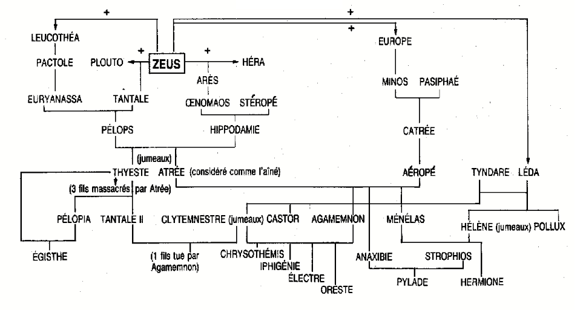

Électre, Jean Giraudoux et les Chartes
Éléments sur l'histoire
Personnages
Premier groupe: personnages canoniques issus de la littérature grecque classique
- Électre
- Oreste
- Clytemnestre
- Égisthe
- Première Euménide
- Deuxième Euménide
- Troisième Euménide
- Le Jardinier
Personnages non actants dans nos extraits, mais mentionnés
- Agamemnon
- Atrée
- Thyeste
- Chrysothémis
- Cassandre
Second groupe: ajouts propres à Giraudoux
- Le Mendiant
- La Femme Narsès
Enfin, puisqu'il en est question plusieurs fois dans notre texte
- anybody2
Arbre généalogique des Atrides
